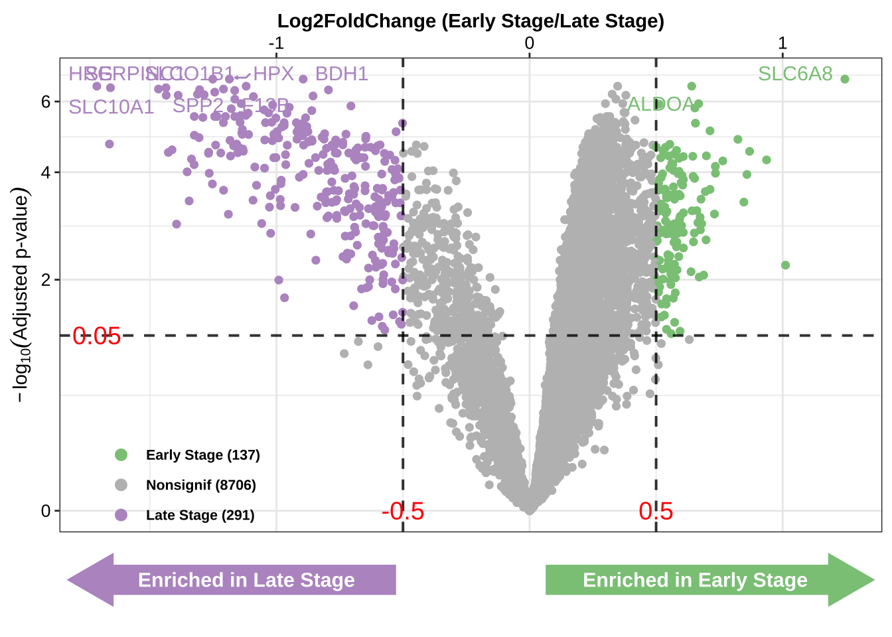

12 差异结果的火山图
火山图（Volcano Plot）是一种用于展示基因差异表达分析结果的二维散点图。它通过同时展示统计显著性和变化幅度，帮助研究者识别出在不同条件下显著差异表达的基因。火山图的横轴通常表示基因表达变化的倍数对数（log2 fold change），纵轴表示统计显著性的负对数值（-log10 p-value）。这种图表因其形状类似火山而得名。
12.1 加载R包
使用rm(list = ls())来清空环境中的所有变量。
12.2 导入数据
12.3 画图函数
12.4 火山图
- 设置对应参数，运行
get_volcano
DEG_vol <- get_volcano(
datsignif = da_res_all,
group_names = grp_names,
x_name = "logFC",
x_name_cutoff = 0.5,
y_name = "AdjustedPvalue",
y_name_cutoff = 0.05,
group_colors = c(grp_colors[1], "grey", grp_colors[2]),
topN = 10,
add_enrich_arrow = TRUE)
DEG_vol

结果：火山图展示了富集在不同分组的基因情况
X轴是
limma的logfc的结果评估基因富集方向和大小；Y轴是
limma的AdjustedPvalue的结果判断基因显著性；散点图的颜色表示基因的属性，下方箭头表示富集方向；
从图中可以得知，总计428个基因在特定阈值下（
abs(logFC) > 0.5，AdjustedPvalue < 0.05）被筛选出来；图中展示的基因（SPP2，SLC6A8）是分别在两组高表达的差异基因。
12.5 输出结果
12.6 总结
在成功获取差异基因的分析结果后，采用了火山图（Volcano Plot）这一强大的可视化工具来展示这些结果。
系统信息
R version 4.3.3 (2024-02-29)
Platform: aarch64-apple-darwin20 (64-bit)
Running under: macOS Sonoma 14.2
Matrix products: default
BLAS: /Library/Frameworks/R.framework/Versions/4.3-arm64/Resources/lib/libRblas.0.dylib
LAPACK: /Library/Frameworks/R.framework/Versions/4.3-arm64/Resources/lib/libRlapack.dylib; LAPACK version 3.11.0
locale:
[1] en_US.UTF-8/en_US.UTF-8/en_US.UTF-8/C/en_US.UTF-8/en_US.UTF-8
time zone: Asia/Shanghai
tzcode source: internal
attached base packages:
[1] stats graphics grDevices datasets utils methods base
other attached packages:
[1] MicrobiomeAnalysis_1.0.3 Biobase_2.62.0 BiocGenerics_0.48.1
[4] data.table_1.15.4 lubridate_1.9.3 forcats_1.0.0
[7] stringr_1.5.1 dplyr_1.1.4 purrr_1.0.2
[10] readr_2.1.5 tidyr_1.3.1 tibble_3.2.1
[13] ggplot2_3.5.1 tidyverse_2.0.0
loaded via a namespace (and not attached):
[1] fs_1.6.4 matrixStats_1.3.0
[3] bitops_1.0-7 DirichletMultinomial_1.44.0
[5] httr_1.4.7 RColorBrewer_1.1-3
[7] doParallel_1.0.17 numDeriv_2016.8-1.1
[9] tools_4.3.3 doRNG_1.8.6
[11] backports_1.4.1 utf8_1.2.4
[13] R6_2.5.1 vegan_2.6-4
[15] lazyeval_0.2.2 mgcv_1.9-1
[17] rhdf5filters_1.14.1 permute_0.9-7
[19] withr_3.0.0 gridExtra_2.3
[21] cli_3.6.2 sandwich_3.1-0
[23] labeling_0.4.3 mvtnorm_1.2-4
[25] proxy_0.4-27 yulab.utils_0.1.4
[27] foreign_0.8-86 scater_1.30.1
[29] showtext_0.9-7 decontam_1.22.0
[31] limma_3.58.1 readxl_1.4.3
[33] rstudioapi_0.16.0 sysfonts_0.8.9
[35] RSQLite_2.3.6 generics_0.1.3
[37] shape_1.4.6.1 gtools_3.9.5
[39] Matrix_1.6-5 biomformat_1.30.0
[41] ggbeeswarm_0.7.2 fansi_1.0.6
[43] DescTools_0.99.54 S4Vectors_0.40.2
[45] DECIPHER_2.30.0 abind_1.4-5
[47] lifecycle_1.0.4 multcomp_1.4-25
[49] yaml_2.3.8 SummarizedExperiment_1.32.0
[51] gplots_3.1.3.1 rhdf5_2.46.1
[53] SparseArray_1.2.4 grid_4.3.3
[55] blob_1.2.4 crayon_1.5.2
[57] lattice_0.22-6 beachmat_2.18.1
[59] cowplot_1.1.3 pillar_1.9.0
[61] knitr_1.46 GenomicRanges_1.54.1
[63] boot_1.3-30 gld_2.6.6
[65] codetools_0.2-19 glue_1.7.0
[67] MultiAssayExperiment_1.28.0 vctrs_0.6.5
[69] treeio_1.26.0 Rdpack_2.6
[71] cellranger_1.1.0 gtable_0.3.5
[73] cachem_1.0.8 xfun_0.43
[75] rbibutils_2.2.16 S4Arrays_1.2.1
[77] metagenomeSeq_1.43.0 survival_3.7-0
[79] SingleCellExperiment_1.24.0 iterators_1.0.14
[81] showtextdb_3.0 statmod_1.5.0
[83] bluster_1.12.0 gmp_0.7-4
[85] TH.data_1.1-2 nlme_3.1-164
[87] ANCOMBC_2.4.0 phyloseq_1.46.0
[89] bit64_4.0.5 GenomeInfoDb_1.38.8
[91] irlba_2.3.5.1 vipor_0.4.7
[93] KernSmooth_2.23-22 rpart_4.1.23
[95] colorspace_2.1-0 DBI_1.2.2
[97] Hmisc_5.1-2 nnet_7.3-19
[99] ade4_1.7-22 Exact_3.2
[101] DESeq2_1.42.1 tidyselect_1.2.1
[103] bit_4.0.5 compiler_4.3.3
[105] glmnet_4.1-8 htmlTable_2.4.2
[107] BiocNeighbors_1.20.2 expm_0.999-9
[109] DelayedArray_0.28.0 checkmate_2.3.1
[111] scales_1.3.0 caTools_1.18.2
[113] digest_0.6.35 minqa_1.2.6
[115] rmarkdown_2.26 XVector_0.42.0
[117] htmltools_0.5.8.1 pkgconfig_2.0.3
[119] base64enc_0.1-3 lme4_1.1-35.3
[121] sparseMatrixStats_1.14.0 MatrixGenerics_1.14.0
[123] fastmap_1.1.1 rlang_1.1.3
[125] htmlwidgets_1.6.4 DelayedMatrixStats_1.24.0
[127] farver_2.1.1 zoo_1.8-12
[129] jsonlite_1.8.8 energy_1.7-11
[131] BiocParallel_1.36.0 BiocSingular_1.18.0
[133] RCurl_1.98-1.14 magrittr_2.0.3
[135] Formula_1.2-5 scuttle_1.12.0
[137] GenomeInfoDbData_1.2.11 Rhdf5lib_1.24.2
[139] munsell_0.5.1 Rcpp_1.0.12
[141] ape_5.8 viridis_0.6.5
[143] CVXR_1.0-12 stringi_1.8.4
[145] rootSolve_1.8.2.4 zlibbioc_1.48.2
[147] MASS_7.3-60.0.1 plyr_1.8.9
[149] parallel_4.3.3 ggrepel_0.9.5
[151] lmom_3.0 Biostrings_2.70.3
[153] splines_4.3.3 multtest_2.58.0
[155] hms_1.1.3 locfit_1.5-9.9
[157] igraph_2.0.3 Wrench_1.20.0
[159] rngtools_1.5.2 reshape2_1.4.4
[161] stats4_4.3.3 ScaledMatrix_1.10.0
[163] evaluate_0.23 renv_1.0.0
[165] BiocManager_1.30.23 nloptr_2.0.3
[167] tzdb_0.4.0 foreach_1.5.2
[169] rsvd_1.0.5 Rmpfr_0.9-5
[171] e1071_1.7-14 tidytree_0.4.6
[173] viridisLite_0.4.2 class_7.3-22
[175] gsl_2.1-8 lmerTest_3.1-3
[177] memoise_2.0.1 beeswarm_0.4.0
[179] IRanges_2.36.0 cluster_2.1.6
[181] TreeSummarizedExperiment_2.10.0 timechange_0.3.0
[183] mia_1.10.0